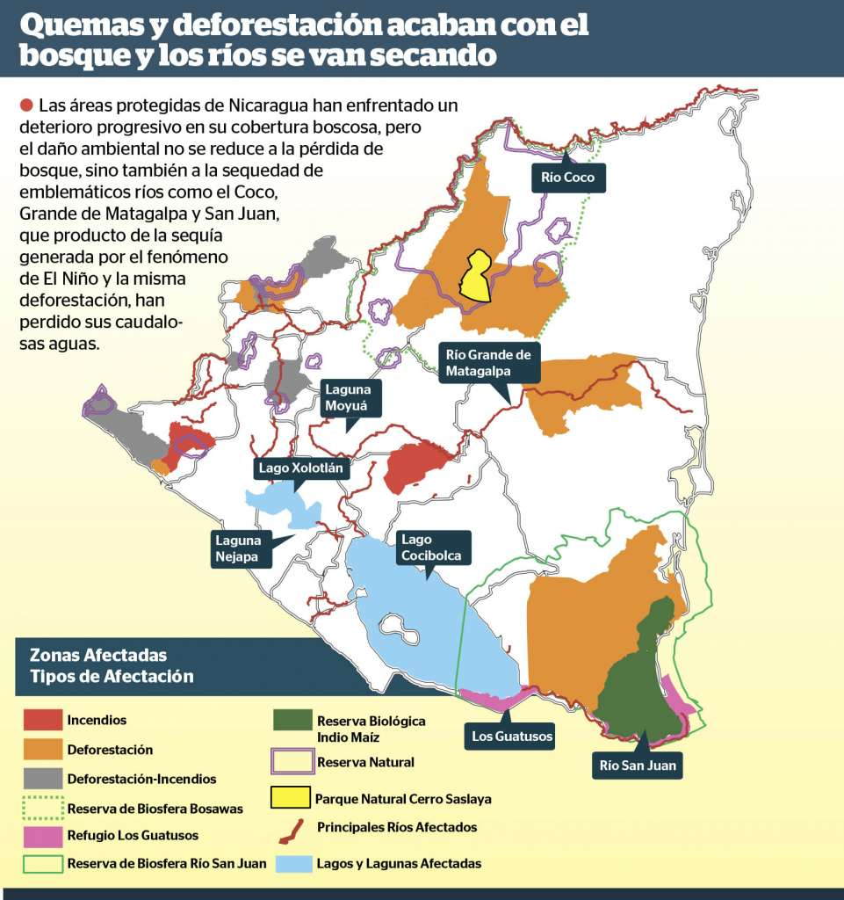
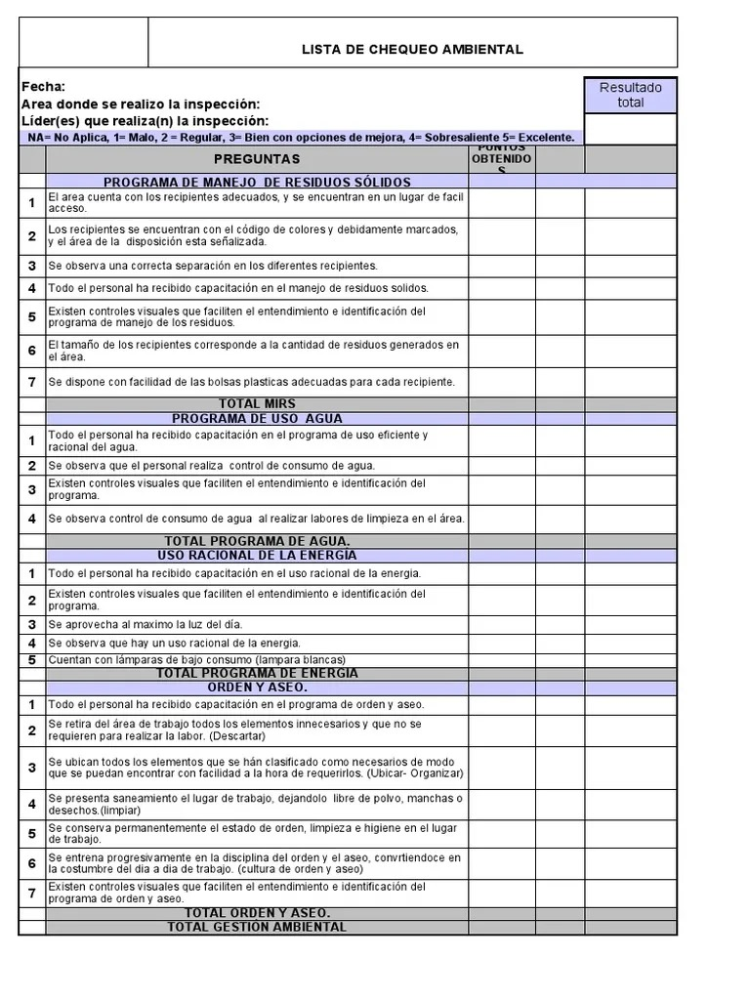

metodologias de Estudio Ambiental
La metodología es sistemática pero su aplicación debe hacerse alternando avances y retrocesos a través de los cuales se van identificando y comprendiendo las repercusiones del proyecto en su entorno. Las principales metodologías para la identificación y valoración de impactos son:
Metodologías Ad hoc (Panel de expertos)
Estos enfoques ofrecen pautas para la evaluación de impacto, centrando su método en la consulta sistemática a expertos. Este proceso implica la identificación de impactos en diversas áreas de conocimiento que un proyecto podría tener en el ambiente, la determinación de medidas correctivas y la asesoría en la implementación de procedimientos de seguimiento y control. La efectividad de estos métodos está fuertemente vinculada al conocimiento y la experiencia de los participantes, así como a su disponibilidad. La desventaja principal radica en la necesidad de formar equipos de expertos específicos para cada tipo de proyecto y establecer paneles representativos para analizar todos los factores ambientales. No obstante, su ventaja reside en su rapidez y facilidad de implementación, permitiendo adaptarse ágilmente a las necesidades particulares de cada proyecto. (UTM, 2013)
Método de Leopold
Se trata de una metodología de identificación de impactos conocida como la matriz de Leopold, que consiste en una tabla donde las acciones del proyecto se encuentran en las columnas y los componentes del medio ambiente en las filas, abarcando un listado de 100 acciones y 88 características ambientales. Aunque teóricamente ofrece 8800 posibles interacciones, en la práctica no todas son consideradas. Esta matriz permite la estimación subjetiva de impactos mediante una escala numérica, la comparación de alternativas, la identificación de acciones que causan impactos de diferente magnitud, y la evaluación de importancia e intensidad de los impactos. Sin embargo, presenta desventajas como el grado de subjetividad en la evaluación y la omisión de impactos indirectos del proyecto. El proceso implica identificar acciones del proyecto y componentes ambientales, estimar la magnitud del impacto y evaluar su importancia, asignando valores en la matriz. Aunque es un método expeditivo, de bajo costo y útil para la comunicación de impactos detectados, no evita la subjetividad en la cuantificación de los impactos y no visualiza las interacciones ni los impactos de un factor afectado sobre otros factores. (UTM, 2013)
Métodos cartográficos
Estos enfoques han sido aplicados en diversas categorías de análisis ambiental, especialmente en la proyección espacial. El método predominante es la superposición de transparencias, donde varios mapas que indican impactos individuales en un territorio se sobreponen para representar un impacto global. Estos mapas facilitan la identificación de características físicas, sociales o culturales resultantes de impactos ambientales específicos, asignándoles valores relativos. La elaboración de estos mapas utiliza elementos como fotografías aéreas, mapas topográficos, observaciones en terreno, opiniones de expertos y actores sociales. Este enfoque es útil para captar variaciones espaciales de impactos, especialmente en relaciones ambientales con indicadores de salud o socioeconómicos, como ductos y carreteras. La evolución de paquetes computacionales, como los Sistemas de Información Geográfica (SIG), ha proporcionado herramientas para gestionar datos espaciales, facilitando la toma de decisiones en investigación, planificación y desarrollo. Los SIG posibilitan diversos tipos de análisis, incluyendo la combinación matemática de capas, operaciones booleanas y simulaciones complejas, mejorando la presentación de resultados para el usuario. (UTM, 2013)
Listados de Chequeo
Este método se basa en una lista ordenada de factores ambientales susceptibles de ser afectados por actividades humanas, siendo su principal función identificar las posibles consecuencias asociadas a la acción propuesta durante la etapa inicial de la Evaluación de Impacto Ambiental (EIA), garantizando que ninguna alteración relevante sea pasada por alto. Una lista de chequeo típicamente incluye rubros como agua, suelos, atmósfera, flora, fauna, recursos naturales, y aspectos culturales. Hay varios tipos de listados, como los simples que contienen una enumeración de factores ambientales con impacto, los descriptivos que ofrecen orientaciones para evaluar parámetros impactados, y los cuestionarios que consisten en preguntas sistemáticas sobre categorías genéricas de factores ambientales. Estas listas son útiles para estructurar las fases iniciales de una EIA, respaldar la definición de impactos significativos, garantizar la inclusión de todos los factores esenciales en el análisis y facilitar la comparación de alternativas de proyectos. Sin embargo, presentan limitaciones al ser consideradas rígidas, estáticas, unidimensionales y lineales, ya que no abordan impactos indirectos, probabilidades de ocurrencia, riesgos asociados, indicaciones de la localización espacial del impacto, ni establecen un orden de prioridad relativa de los impactos. (UTM, 2013)
Mas informacion de lista de chequeo ambientalDiagramas de Flujo

Se utilizan para establecer relaciones de causalidad lineal entre la acción propuesta y el ambiente afectado (Conesa, 1993). También se utilizan para analizar impactos indirectos. Tienen las ventajas de ser fáciles de construir y de proponer la relación de causalidad; sin embargo no facilitan la cuantificación de impactos y se limitan a mostrar las relaciones causa-efecto (su utilización se hace compleja al incrementarse las acciones e impactos ambientales involucrados). Estos diagramas deben ser complementarios de las metodologías matriciales u otras más cuantitativas. (UTM, 2013)
Método de Batelle
Este método matricial, inicialmente diseñado para evaluar impactos en proyectos relacionados con recursos hídricos y ahora aplicado de manera más amplia en el ámbito ambiental, se presenta como una lista de verificación jerarquizada con escalas de ponderación. Este enfoque, que abarca desde categorías ambientales generales hasta medidas ambientales muy específicas, proporciona resultados cuantitativos que permiten la comparación con otros proyectos y favorece la toma de decisiones al sistematizar la evaluación de alternativas. A pesar de sus ventajas, como la capacidad para apreciar la degradación ambiental, presenta limitaciones al utilizar índices desarrollados originalmente para proyectos hidráulicos en Estados Unidos, lo que requiere adaptabilidad en diferentes contextos, y al ser considerada rígida al no tener en cuenta las interacciones causa-efecto y la dinámica de los sistemas ambientales. (UTM, 2013)